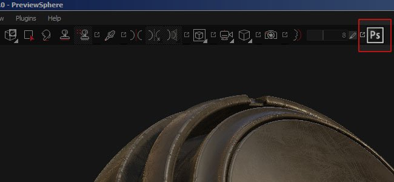
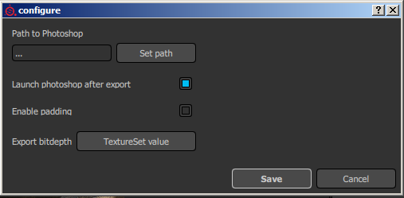

Substance Painter 2.3 improve the scripting API in order to release its first official plugin : a Photoshop export with the full layer stack available.
Release Date : 15 September 2016

With this release we focused on adding new possibilities in the scripting API in order to implement an advanced exporter for Photoshop. To access this new export, simply click on the Photoshop icon available in the main toolbar (if the plugin is activated, which the case by default). The plugin allow to export the full layer stack available in a texture set and create a similar structure inside a PSD file. This feature require to have Photoshop installed on your computer in order to be able to generate the PSD file.
A few options are available via the configure button of the plugin menu :

Our latest tutorial explains the export process with the new plugin :
(Released 7 October 2016)
Added :
Fixed :
(Released 15 September 2016)
Added :
Fixed :